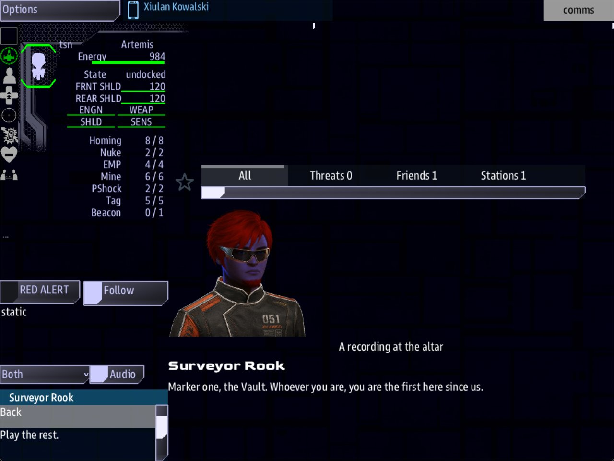

Class 4, Lecture 4 - Places that speak¶
What you will have at the end¶
The Altar says something, twice over.
- To the ship. When the ship comes inside The Vault, a call arrives on Comms. It is a recording, forty years old, left by the first people to survey The Hollow. The crew can play the rest of it, and one answer puts The Niche on the map.
- To a person. The Altar also has words of its own, for a crew member who goes and stands in front of it. You write those today. Nobody leaves the ship until Lecture 8, so you will not hear them today.

Comms with "Surveyor Rook - A recording at the altar" open: the take, Back, and the two answers.You will add to mission.amd. You will not touch story.mast.
Today is about what a place says. Lecture 5 will teach what is lying in a place. Lecture 8 will teach going there in a suit.
The video¶
About 6 minutes. Subtitles are available in the player.
Before you start¶
MyRuinas Lecture 3 left it: The Hollow, with The Ring, The Way In, The Altar and The Niche.mission.amdis 141 lines long and ends with The Niche.sbs lint MyRuinsaysclean.- You have done Class 2, Lectures 2 to 5. You have written a character and a scene, had the story place the scene as a call, and given the crew answers.
- VS Code with the mission folder open, a command prompt open in
C:\Cosmos\data\missions, and the game closed.
This lecture adds a Comms console to the line that starts the game:
Step 1 - Two ways a place can speak¶
A place in a ruin can speak to two different listeners. They are written differently, and today only one of them can be played.
| To the ship | To a person | |
|---|---|---|
| Who hears it | The bridge | A crew member in a suit, and any other suit within 600 of them |
| What starts it | The ship comes near the place | The crew member's suit arrives at the place |
| Where it is read | The Comms console, as a call | That crew member's handheld |
| How often | Once | Once. Whoever comes later reads one line about the place |
| What you write | A beat in the Quests section, and a scene with a speaker | A Scene: line on the place, and a scene |
| You can play it | Today | From Lecture 8 |
A ship that flies up to a place does not open the place's Scene:. That line waits
for a person. So today you write both: first the call, which you can hear, and then the
place's own words, which you check with lint and leave for Lecture 8.
Step 2 - A voice¶
A call is placed by somebody, and a place is not a somebody. So the place gets a voice: a recording, left on the altar by the survey team that found this ruin first.
Go to the end of mission.amd, below The Niche's note. Leave two blank lines, and type:
// ---- Characters. The voices in the story.
## [Characters](characters)
### [Surveyor Rook](rook)
---
Face: terran_male
---
Led the first survey of The Hollow, forty years ago. He left recordings behind.
This is a character record, the same as in Class 2. The word in round brackets, rook,
is his key. Everything below points at him by that key.
Step 3 - What the voice says¶
Below the character, at the end of the file, leave two blank lines and type:
// ---- Dialogue. What is said, and what the crew can say back.
## [Dialogue](dialogue)
### [Rook at the Altar](rook_altar)
---
Speaker: rook
When: hail
Title: A recording at the altar
---
% Survey marker one. If you can hear this, you are where I stood.
% Marker one, the Vault. Whoever you are, you are the first here since us.
- [Play the rest.](rook_more)
- [Shut it off.]()
### [The Rest of It](rook_more)
---
Speaker: rook
---
% There was something on this table when we came. We took it. Look in the Gallery, at the back.
- [Mark the Gallery.]()
- [End playback.]()
Nothing here is new. A reminder of what each part does:
| Line | What it means |
|---|---|
Speaker: rook |
Who is talking: the character's key |
When: hail |
This scene is a call that comes in to the ship |
Title: A recording at the altar |
What the call is about. The crew reads it beside his name before they open it |
The % lines |
Takes. The game uses one each time. One take is one line in the file |
- [Play the rest.](rook_more) |
An answer that leads to another scene |
- [Shut it off.]() |
An answer that ends the call |
The second scene has no When: and no Title:. The only way into it is the answer that
names it.
Step 4 - Let the place make the call¶
In Class 2 a beat waited for a quest to reveal it. This one waits for the ship to get somewhere.
Find the Quests section. On the blank line below Study the Derelict, type:
### [Marker One](marker_one)
---
Beat
Starts when: reach altar 600
Action:
- rook hails rook_altar
---
The ship comes close to the altar, and the old survey marker starts to play.
| Line | What it means |
|---|---|
### |
Three hashes. With four it would be a step of First Contact |
Beat |
A moment in the story, not a job. It stays out of the quest list |
Starts when: reach altar 600 |
Wait until a ship is within 600 of the place that wears the role altar |
Action: |
What happens the moment it starts |
- rook hails rook_altar |
Two spaces, a dash, a space. Then who calls, the word hails, and the key of the scene |
Three things to know about reach altar 600.
The word is a role. It is the word on the place's Roles: line. It is not the place's
key and it is not its name. For The Altar all three look alike. For The Way In they do
not: its key is way_in and its role is entrance, so the line would be
reach entrance 600.
The number is how close. It is measured from the ship to the place, in the same units as the ruin's own numbers. The Vault is 700 from its middle to its wall, and The Altar is at its middle. So 600 means: inside the room.
Always write the number. Leave it out and the game uses 5000. That is wider than the whole ruin, so the call would be waiting before the ship was through the door.
The call is placed once. If the ship leaves the room and comes back, it is not placed again.
In Lecture 3 you saw The Altar turn into a gold contact when the ship came within 1200. It still does. The contact appears in the tunnel. The call comes in the room.
Step 5 - An answer that changes the map¶
In Class 2 an answer could start a quest, finish one, fail one, or send a word into the story. In a ruin it can do one more thing.
Go back to The Rest of It and add to its first answer:
| Part | What it means |
|---|---|
; |
Everything after it is what the answer does |
reveal |
Show a place in the ruin |
niche |
Which place: its key, the word in round brackets in its heading |
The Niche is the place you hid in Lecture 3. Until now it appeared on the map only when the ship came within 1200 of it. With this answer it appears the moment Comms says so, from the other side of the ruin.
Mind the difference between the two lines you have written today:
| Line | Names the place by |
|---|---|
Starts when: reach altar 600 |
Its role, from its Roles: line |
; reveal niche |
Its key, from its heading |
Of your three places, The Way In is the only one where those are two different words.
Step 6 - The place's own words¶
Now the other listener: a crew member who has left the ship and is standing at the altar. From there nobody is calling. The words are what that person sees.
Find The Altar in the Relics section. Add two lines to its fence, under Roles::
### [The Altar](altar)
---
Relic: hollow
Point: 3000, 0, 2800
Roles: altar
Scene: altar_look
Scan: A stone table, cut from the floor of the room. Its top is worn into a shallow bowl.
---
The middle of the Vault. Whatever was kept here is gone.
| Line | What it means |
|---|---|
Scene: altar_look |
The key of a scene in your Dialogue section. It opens for the first crew member whose suit arrives here |
Scan: |
One line about the place. A crew member who arrives after the scene is over reads this line. Keep it on one line |
| The note under the fence | Still yours. Players never see it |
Then go to the end of the file, below The Rest of It, and write the scene:
### [At the Altar](altar_look)
% A stone table, one piece with the floor. Its top is worn into a shallow bowl, and the bowl is empty.
% The table is cut from the floor of the room. Something sat in the bowl on top of it for a very long time.
- [Read the marks on the rim](altar_marks)
- [Leave it alone]()
### [The Marks](altar_marks)
% Tally marks, in sets of five. Somebody counted days here, and then stopped.
- [Step back]()
These two scenes have no fence at all. There is no Speaker:, because nobody is speaking.
There is no When: and no Title:, because this is not a call. The takes and the answers
work the way they always have.
One rule is new. Every path through a place's scene must end in an answer with empty round brackets. A place's scene closes only when somebody picks an answer that ends it. With no such answer it does not close.
How a place's scene behaves:
| Rule | What it means |
|---|---|
| It opens on arrival | A crew member picks the place from a list on their handheld, and their suit flies there. The scene opens when the suit gets there. Flying past does not open it |
| It opens for whoever is there | The crew member who arrives, and anyone else in a suit within 600 of them. Someone who arrives while it is still open joins it |
| It plays once | Once in the whole game, however many people come |
After that, the Scan: line |
A crew member who arrives later, for their first time, reads the Scan: line. Someone coming back reads nothing new |
| A ship never opens it | Not at 600, and not on top of the point |
Its answers can reveal too |
; reveal niche works here the same as in a call. It also puts a hidden place on the list of places a crew member can be sent |
You cannot play this part today. Lint can check it, and Step 7 shows how.
Your finished pieces¶
In the Quests section, below Study the Derelict:
### [Marker One](marker_one)
---
Beat
Starts when: reach altar 600
Action:
- rook hails rook_altar
---
The ship comes close to the altar, and the old survey marker starts to play.
In the Relics section:
### [The Altar](altar)
---
Relic: hollow
Point: 3000, 0, 2800
Roles: altar
Scene: altar_look
Scan: A stone table, cut from the floor of the room. Its top is worn into a shallow bowl.
---
The middle of the Vault. Whatever was kept here is gone.
At the end of the file:
// ---- Characters. The voices in the story.
## [Characters](characters)
### [Surveyor Rook](rook)
---
Face: terran_male
---
Led the first survey of The Hollow, forty years ago. He left recordings behind.
// ---- Dialogue. What is said, and what the crew can say back.
## [Dialogue](dialogue)
### [Rook at the Altar](rook_altar)
---
Speaker: rook
When: hail
Title: A recording at the altar
---
% Survey marker one. If you can hear this, you are where I stood.
% Marker one, the Vault. Whoever you are, you are the first here since us.
- [Play the rest.](rook_more)
- [Shut it off.]()
### [The Rest of It](rook_more)
---
Speaker: rook
---
% There was something on this table when we came. We took it. Look in the Gallery, at the back.
- [Mark the Gallery.]() ; reveal niche
- [End playback.]()
### [At the Altar](altar_look)
% A stone table, one piece with the floor. Its top is worn into a shallow bowl, and the bowl is empty.
% The table is cut from the floor of the room. Something sat in the bowl on top of it for a very long time.
- [Read the marks on the rim](altar_marks)
- [Leave it alone]()
### [The Marks](altar_marks)
% Tally marks, in sets of five. Somebody counted days here, and then stopped.
- [Step back]()
Step 7 - Check it¶
You want clean under mission.amd.
Lint names every mistake in the first two tables. The word in the last column is at the end of the line lint prints.
The call:
| Mistake | What the game does | Lint says |
|---|---|---|
reach alter 600 (the role misspelled) |
The call never comes | role-nothing-wears |
reach way_in 600 for The Way In (its key, not its role) |
The call never comes | role-nothing-wears |
The place has no Roles: line |
No contact on the map, and the call never comes | role-nothing-wears |
- rook hails rook_alter (the scene misspelled) |
The call never comes. A line in mast.runtime.log says why |
dangling-action-ref |
- rook hail rook_altar (no s) |
The same | unknown-action-verb |
- rok hails rook_altar (the caller misspelled) |
The call comes, in Rook's name. The scene's Speaker: line wins |
hail-speaker-mismatch |
Speaker: rok |
The caller is named rok and has no face |
dangling-speaker |
| No Characters section | The caller is named rook, in small letters, and has no face |
dangling-speaker |
No When: hail line |
The call still comes | hail-not-a-hail |
Beat on the second line of the fence |
The call never comes. Marker One is in the quest list, as a job on offer | fence-syntax, an error |
The dash under Action: missing, or not indented |
The call never comes | fence-syntax, an error |
## [Marker One](marker_one) (two hashes) |
The call never comes | section-not-loaded |
## [Rook at the Altar](rook_altar) (two hashes) |
The call never comes, and every scene below it in the file is lost with it. A line in mast.runtime.log |
section-not-loaded |
#### [The Rest of It](rook_more) (four hashes) |
The scene above it disappears, so the call never comes. A line in mast.runtime.log |
scene-nested |
## [Scenes](scenes) for the section |
The call never comes, and no scene of yours is read | section-not-loaded |
- [Play the rest.](rook_mor) |
That answer ends the call | dangling-choice |
; reveals niche |
The answer ends the call and shows nothing | unknown-outcome-verb |
; reveal nich, or ; reveal The Niche (the name) |
The same. reveal wants the key of a place |
ground-verb-target |
() reveal niche (no semicolon) |
The same | choice-tail-ignored |
; signal some_word when no quest waits for that word |
The word is sent and nothing happens | signal-no-route |
| The beat written in the Relics section | The call never comes. The game takes the beat for a second ruin, and says so in mast.runtime.log |
relic-section-stray: move it to Quests |
The place's own words. Here "what the game does" is what happens when a crew member arrives, which you will see in Lecture 8:
| Mistake | What the game does | Lint says |
|---|---|---|
Scene: altar_lok, or Scene: At the Altar (the name, not the key) |
Nothing opens, and a line in mast.runtime.log names the place and the scene |
dangling-scene |
Scene: Altar_Look (capitals in the key) |
The scene opens. The game does not mind capitals here. Fix it anyway | dangling-scene |
Scenes: altar_look (the field's name wrong) |
Nothing opens | unknown-field |
Scene: and Scan: below the closing --- |
Nothing opens, and there is no line to read | field-below-fence |
The Scan: text broken onto two lines |
Only the first line is read | fence-syntax, an error |
#### [At the Altar](altar_look) (four hashes) |
The scene above it, The Rest of It, disappears: "Play the rest." ends the call | scene-nested |
## [At the Altar](altar_look) (two hashes) |
Nothing opens, and a line in mast.runtime.log |
section-not-loaded |
- [Read the marks on the rim](altar_mark) |
That answer ends the scene | dangling-choice |
Scene: on a room, on a prop, or on the ruin itself |
Nothing ever opens it. A crew member can only be sent to a place | relic-field-wrong-record: put it on a Point: |
| The place's scene written in the Relics section, under the place | Nothing opens. The game takes the scene for a second ruin, and says so in mast.runtime.log |
relic-section-stray: move it to Dialogue |
Lint also builds the ruin the way the game will. If a place cannot be reached from the way
in, it says so (relic-unreachable-node).
What lint cannot see¶
Lint says clean for everything in this last table. The first two rows are the ones to
check by eye every time.
| You wrote | What happens | What tells you |
|---|---|---|
Starts when: reach altar (no number) |
The game uses 5000. The call is waiting before the ship is inside the ruin | Nothing |
; reveal gallery (the key of a room) |
The answer ends the call and shows nothing. reveal wants the key of a place, not of a room |
Nothing |
reach altar 60 |
The call comes only if the ship passes within 60 of the middle of the place. In practice, never | Nothing |
Roles: steps on the place and reach steps 600 |
The call never comes. The game drops the last s and looks for step. Use a role that does not end in s |
Nothing |
The Beat line left out |
The call never comes. Marker One is in the quest list, as a job on offer | The quest list |
No Starts when: line, or Done when: written in its place |
The call is waiting when the game starts | Nothing |
| The beat written in the Dialogue section | The call never comes | Nothing |
| No takes in Rook at the Altar | The call opens with nothing said, and offers the answers | Nothing |
| Two beats that call the same scene | The crew gets the same call twice | Nothing |
| A place's scene with no takes | It opens with nothing said, and offers the answers | Nothing |
| A place's scene with no answers | It opens and never closes | Nothing |
A Scene: line and no Scan: line |
Whoever comes later reads nothing | Nothing |
The same Scene: on two places |
It opens at each of them, once each | Nothing |
Four things that look like mistakes and are not:
reach Altar 600works. Capitals do not matter in the role.## [Dialogue](Dialogue), with a capital in the section's key, works too.Action: rook hails rook_altar, all on one line, works when there is one thing to do.- A place with a
Scene:and noRoles:line still opens its scene for a person. It has no contact on the map, and a ship cannotreachit.
Step 8 - Play it¶
Start the game with a server, a Helm console and a Comms console:
- Fly to The Hollow, in through The Mouth, across The Nave and up the tunnel to The Vault. As you come up the tunnel, The Altar appears on the map, the same as in Lecture 3. Comms has nothing yet.
- Keep going until the ship is inside The Vault. On Comms, the Incoming Hails list now has one row: Surveyor Rook - A recording at the altar.
- Select the row. The call opens with Rook's face, his name, and one of your two opening takes. The list offers Back and your two answers.
- Choose Play the rest. He says the rest. The list offers Back and two answers.
- Choose Mark the Gallery. The call is over. On Helm's map, The Niche is now a gold contact, at the back of The Gallery. The ship has not been near it.
- Fly back down the tunnel to The Nave, then into The Vault again. No second call comes.
Play it once more and choose Shut it off. The call is gone, it does not come back, and The Niche stays dark until the ship finds it the old way.
The words you wrote in Step 6 do not appear anywhere today. That is correct.
When you stop, open mast.runtime.log in your mission folder. It should be empty.
If something goes wrong¶
| What you see | Likely cause |
|---|---|
| The ship is in The Vault and no call comes | Run lint first. Then work down this list. The word after reach is not the word on the place's Roles: line. The place has no Roles: line. The beat has no Beat line. The beat is not in the Quests section, or its heading has two hashes. The Dialogue section's key is not dialogue. The heading of Rook at the Altar has two hashes, or the scene below it has four |
| A call is waiting when the game starts | The beat has no Starts when: line, or the line says Done when: |
| The call comes before the ship is inside the ruin | There is no number after the role |
| The call never comes, however close the ship gets to the wall | The number is too small. The ship has to pass that close to the middle of the place |
| The caller's name is a key in small letters, and there is no face | There is no Characters section, or the word after Speaker: is not a character's key |
| "Mark the Gallery." and The Niche does not appear | The word after reveal is not The Niche's key. Or the semicolon is missing |
| An answer ends the call when it should lead on | The key in its round brackets is not a scene's key |
| The ship is on top of The Altar and "At the Altar" does not open | Nothing is wrong. That scene is for a person, not for a ship (Step 1) |
mast.runtime.log says relic '...' has no rooms |
A record that is not part of the ruin is in the Relics section: your beat, or a scene |
Exercise¶
- A second recording. Give The Niche a call of its own. Below Marker One, add:
### [Marker Two](marker_two)
---
Beat
Starts when: reach niche 400
Action:
- rook hails rook_niche
---
The ship finds the back of the Gallery, and the second marker plays.
At the end of the file, add the scene:
### [Rook at the Niche](rook_niche)
---
Speaker: rook
When: hail
Title: A second recording
---
% Marker two. This is where we put it back. We could not keep it.
- [Log it.]()
- [End playback.]()
- An answer that finishes a quest. In the Quests section, above Marker One, add:
### [What Rook Left](rook_trail)
---
Scope: shared
Starts when: at once
Objective: Find the survey marker in the Gallery and hear it out
Done when: signal rook_heard
---
Somebody surveyed this place before you. Find what they left.
Their markers still play when a ship comes close. One of them is somewhere in The Gallery.
A quest's description is a page, as in Class 1, Lecture 8: the blank line starts a second paragraph.
Then change the first answer in Rook at the Niche:
Play. The quest is in the list from the start, and it completes when Comms gives that answer.
- The Niche's own words. Add two lines to The Niche's fence:
And at the end of the file:
### [In the Niche](niche_look)
% A square recess in the back wall, cut by a different hand from the room. Something has been pushed deep into it.
- [Reach in]()
- [Leave it]()
Run lint. You will hear this one in Lecture 8.
-
Break it where lint can see. Change
reach altar 600toreach alter 600. Run lint and read the warning. Put it back. -
Break it where lint cannot see. Delete the
600, so the line readsStarts when: reach altar. Run lint:clean. Play: the call is waiting before the ship is through the door. Put the number back.
Checkpoint¶
You are done when all five are true:
sbs lint MyRuinshowsmission.amdasclean.- No call is waiting while the ship is outside The Vault.
- Inside The Vault, Surveyor Rook - A recording at the altar is in the Incoming Hails list, and it has two answers.
- Mark the Gallery. puts The Niche on the map.
- The Altar's fence has a
Scene:line and aScan:line, and the scene it names is in your Dialogue section.
Next¶
Lecture 5 is what is lying in the rooms: things a ship can take aboard. Lecture 6 is a clue the crew learns in one place and uses in another, a side story, and a cutscene. Both start from the files this lecture leaves, without the exercise, and neither needs the other. Do them in either order.
Further reading¶
- "Relic interiors" in the library documentation: "Places inside it" and "What a place
says". Its example scene uses
checkandopen, which are for a crew in suits, and aBackdrop:picture from an art pack your mission does not have. - "Incoming hails" in the library documentation: "Placing the call", "What an answer means" and "Who is calling".
- "Quests" in the library documentation: the table of triggers, for
reach. relics\voice.amdin Storm's Beacon: a shipped ruin whose Dialogue section holds a scene for every place in it.
Download this lecture's finished files (a zip of its example folder).